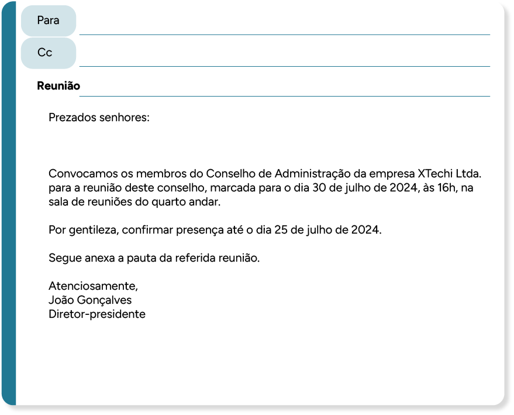
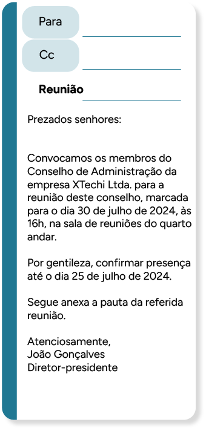

Etapas de planejamento e organização de encontros de trabalho e negócio: reuniões nacionais e internacionais, organização de públicos interno, externo e estrangeiro, multiculturalidade, número de participantes, tipologia, convocação, pauta e ata, apoio logístico e recursos tecnológicos
O profissional de secretariado, além de precisar conhecer os principais tipos de encontros de trabalho, é responsável por organizá-los.
Portanto, neste material, você conhecerá os tipos e as características de encontros. Além disso, aprenderá que, de acordo com o tipo de encontro de trabalho, é necessário emitir alguns documentos. Por fim, você verá quais são as necessidades logísticas para que os encontros aconteçam.
Tipologia
Os encontros de trabalho podem ser classificados pelo tipo e pelo objetivo e, com base nestes, receber o nome de reunião, assembleia geral, capacitação, treinamento, integração, palestra, congresso, convenção etc.
O tipo de encontro “reunião” pode ter como objetivo alinhar informações, tomar algumas decisões, fazer negociações, definir metas, planejar ações etc. As reuniões são agendadas para que duas ou mais pessoas troquem ideias até chegar a um consenso sobre determinado assunto.
Para que as reuniões sejam realizadas, o profissional de secretariado precisa tomar diversas providências, que vão desde o agendamento até a finalização da ata, que é o registro das definições da reunião. Para tanto, é muito importante que o técnico em secretariado planeje adequadamente as etapas da reunião para que ela seja realizada com êxito.
Segundo Veiga (2010), existem vários aspectos que garantem a eficácia das reuniões. São eles:
- Definir com o gestor a data, o horário (início e término), o local desejado, os participantes e os assuntos a serem tratados, com os respectivos tempos, além de verificar a necessidade de material de apoio (datashow, flipchart, retroprojetor, televisão, vídeo, videoconferência, quadro branco etc.)
- Verificar e reservar espaço físico adequado ao número de participantes
- Elaborar e encaminhar a pauta da reunião para os convocados, caso haja necessidade
- Convocar os participantes e informá-los sobre a pauta, se houver
- Providenciar o material de apoio solicitado pelo gestor, caso haja necessidade
- Elaborar a lista de presenças
- Elaborar e reproduzir aos participantes o material a ser utilizado pelo gestor (apresentação, relatórios etc.)
- Providenciar identificação de mesa, caso haja necessidade
- Providenciar, caso a reunião se estenda até o horário de almoço, refeições leves, saborosas e práticas aos participantes (se possível, verificar com antecedência a preferência de cada pessoa) ou reservar algum restaurante próximo à empresa e que esteja dentro do padrão dos executivos
- Solicitar café e água ao serviço de copa (ou setor responsável) e informá-lo sobre data, horário e quantidade de participantes da reunião, para que fique ciente e possa se organizar
- Se a reunião ocorrer nas primeiras horas da manhã, verificar com o gestor a necessidade de café da manhã
- Se a reunião for longa, estabelecer alguns intervalos para que os participantes possam ir ao banheiro e fazer contatos telefônicos (o secretário deve providenciar lanches para essas reuniões)
- Se o secretário não for o responsável pela redação da ata, digitá-la tão logo seja entregue e submetê-la à aprovação do gestor e, em seguida, colher a assinatura dos participantes, digitalizar e liberar a ata para a pessoa responsável
No dia da reunião, o técnico em secretariado deve verificar se o gestor está com os documentos que foram organizados para a reunião e encarregar-se de levá-los, caso o gestor realmente tenha se esquecido deles.
Geralmente, o profissional que acompanha a reunião para redigir a ata deve chegar antes do horário da reunião para testar os equipamentos e verificar se todos os materiais estão disponíveis. É importante também verificar se o ar-condicionado está em uma temperatura agradável.
Quando os participantes da reunião chegarem à empresa, o profissional de secretariado deve recepcioná-los e levá-los até a sala de reuniões, oferecendo café e água. Esses detalhes fazem toda a diferença para que a reunião ocorra dentro do horário previsto.
Se for acompanhar a reunião, você provavelmente precisará deixar uma pessoa responsável por atender às ligações em sua sala. Caso não haja alguém disponível, transfira a ligação para algum setor da empresa. Se você trabalhar em uma empresa de pequeno porte ou em um escritório pequeno, tenha uma secretária eletrônica para gravar os recados.
Além da reunião, um encontro de trabalho muito comum no ambiente corporativo é a assembleia geral. A assembleia geralmente reúne sócios, cooperados e acionistas para definir algumas atividades previstas na ordem do dia.
Existem dois tipos de assembleia: a assembleia geral ordinária, que ocorre uma vez ao ano; e a assembleia geral extraordinária, que pode ocorrer mais de uma vez ao ano. Ambas geralmente estão previstas nos procedimentos das empresas, pois são uma forma de manter informados todos aqueles envolvidos na governança corporativa. Nelas, são necessários os mesmos cuidados que em situações de reunião.
Existem também encontros com o intuito de ampliar conhecimentos tanto dos colaboradores quanto dos clientes e dos fornecedores. Tais encontros são os treinamentos, as capacitações, os congressos, as palestras e as convenções. Os congressos e as convenções também podem ocorrer junto a feiras para exposição de produtos e serviços das empresas.
Convocação, pauta, lista de presenças e ata
Os documentos de convocação, pauta, lista de presenças e ata fazem parte da organização da reunião. Nem todas as organizações utilizam esses documentos, mas é extremamente importante conhecer cada um deles.
A convocação é enviada para as pessoas que participarão da reunião com algumas informações, como data, horário, local e, muitas vezes, pauta. As convocações atualmente são enviadas por e-mail com a pauta em anexo. Veja um exemplo:
 Prezados senhores:
Convocamos os membros do Conselho de Administração da empresa XTechi Ltda. para a reunião deste conselho, marcada para o dia 30 de julho de 2024, às 16h, na sala de reuniões do quarto andar.
Por gentileza, confirmar presença até o dia 25 de julho de 2024.
Segue anexa a pauta da referida reunião.
Atenciosamente,
João Gonçalves
Diretor-presidente
Todos os assuntos que serão discutidos na reunião devem constar na pauta, a qual pode ser definida nas próprias reuniões e verificada com antecedência com os responsáveis pela reunião.
Por exemplo, o profissional de secretariado envia e-mail a todos os membros participantes do grupo da reunião e questiona quem tem algum assunto para inserir em pauta. Dependendo do grupo, a pauta será validada pelo diretor-presidente ou pelo responsável pela empresa.
Sempre verifique com o seu superior a possibilidade de inserir novos assuntos trazidos pelos membros na pauta, pois, às vezes, eles não têm autonomia para tal. Isso depende muito da organização e do tipo do grupo. Quando se fala em grupo, refere-se aos grupos de trabalho que compõem a organização.
A pauta pode ser enviada com a convocação ou sozinha. Se for enviada sozinha, devem constar, nela, informações da convocação. Veja dois modelos de texto para pauta:
Pauta enviada com convocação
REUNIÃO DO CONSELHO FISCAL XTECHI LTDA.
Data: 30 de julho de 2024
Horário: 16h
Local: Sala de reuniões do quarto andar
Pauta/assunto do dia:
- Demonstrações contábeis do mês de junho de 2024
- Apresentação das contas bancárias encerradas
- Apresentação dos investimentos realizados
- Assuntos gerais
Pauta enviada sem convocação
REUNIÃO DO CONSELHO FISCAL XTECHI LTDA.
Pauta/assunto do dia:
- Demonstrações contábeis do mês de junho de 2024
- Apresentação das contas bancárias encerradas
- Apresentação dos investimentos realizados
- Assuntos gerais
Os dois exemplos são modelos de textos, ou seja, demonstram o conteúdo necessário para uma pauta. Contudo, verifique as necessidades da empresa onde você trabalha para elaborar a pauta de reunião. Existem outros modelos, e você pode pesquisar e utilizar aquele que mais se adapta à sua realidade.
Com relação à lista de presenças, você pode elaborá-la com base nas confirmações de presença que receber, após o envio da convocação, ou, se for um grupo fechado, você pode deixar uma lista pronta e somente alterar os dados da reunião.
A lista de presenças será necessária para elaborar a ata da reunião, pois é importante citar as pessoas que participaram do momento. Nessa lista, você inserirá o nome dos participantes da reunião, deixando um local para assinaturas ao lado de cada nome. Lembre-se de listar os nomes em ordem alfabética, pois assim fica mais fácil localizar o campo no momento da assinatura.
Veja um modelo de lista de presenças:
| LISTA DE PRESENÇAS DA LISTA DE PRESENÇAS DA | Data: | Horário: | Local: |
|---|---|
| Participantes | Assinatura |
| Ana Silva Amarantes | |
| Beatriz Valença | |
| João Carlos Soares | |
| Jurema Santos Rocha | |
| Jurema Santos Rocha | |
| Mário Roberto Junqueira | |
| Paulo Sérgio do Amaral | |
| Rute Motta da Veiga |
A ata é o registro de tudo o que foi definido na reunião. Durante a reunião, geralmente deve-se seguir a pauta com os assuntos que serão tratados. Então, o responsável por conduzir o momento (na maioria das vezes, quem solicitou a reunião) lê os itens previstos, os quais serão tratados em sequência.
De acordo com Veiga (2010):
Ata é o documento no qual fica registrado tudo o que foi discutido e acordado pelos participantes durante a reunião. Deve ser escrita em linguagem objetiva e simples. O responsável pela elaboração da ata deve relatar os assuntos e as discussões da maneira como aconteceram. A ata deve ser encaminhada para os participantes o mais breve possível, para que todos possam acompanhar e tomar as providências referentes aos assuntos da sua área. Nem sempre a secretária é a responsável pela redação da ata. Em algumas ocasiões, a secretária da reunião é escolhida pela pessoa que fez a convocação da reunião. Fazem parte da ata os seguintes itens: título da reunião, data, horário, local, presença, mesa dirigente, assuntos discutidos, as votações realizadas, as deliberações e as assinaturas.
A ata, em geral, é um documento formal que mantém uma escrita contínua, evitando espaçamentos, isto é, entrada de parágrafo, pois a formatação justificada é a mais adequada. Contudo, algumas organizações têm optado por modelos mais enxutos, que facilitam a leitura e a verificação de pendências.
As decisões que foram tomadas devem ficar muito claras na ata, bem como as pendências a serem resolvidas.
Portanto, se você participar de uma reunião para redigir a ata, preste atenção ao fechamento das decisões, bem como ao nome das pessoas que ficaram responsáveis por resolver alguma pendência. Anote tudo claramente. Muitas vezes, não é preciso anotar todas as discussões, mas, quando houver algum participante que não esteja de acordo com alguma decisão, insira na ata o nome de quem diverge do assunto.
Aliás, depois de redigir a ata, envie a minuta dela para validação de todos os participantes da reunião. A minuta da ata é o rascunho. Quando a ata for aprovada por todos, imprima-a e colete as assinaturas.
Veja dois modelos de ata:
Clique ou toque para visualizar o conteúdo.
DownloadEsses modelos podem ser adequados às necessidades da organização. Portanto, pesquise em livros e na internet mais informações para conhecer modelos de ata. Caso queira, você também pode mesclar modelos, de acordo com o que achar mais adequado à sua realidade.
Reuniões nacionais e internacionais
O técnico em secretariado poderá auxiliar o secretário executivo no agendamento de reuniões nacionais e internacionais, o que requer muita atenção às informações necessárias para os agendamentos. Independentemente do tipo (nacional ou internacional), no momento em que você for solicitar uma reunião com outra organização, tenha as informações necessárias para repassar ao secretário da outra empresa.
Verifique com a sua gestão todos os horários disponíveis para agendar a reunião, para então repassá-los ao profissional de secretariado da outra organização, pois ele precisa verificar a disponibilidade com a gestão dele para tentar conciliar as duas agendas. Porém, fique atento: caso o outro profissional não consiga conciliar as agendas, você, devido ao fato de ser o solicitante, é quem terá de se adequar às possibilidades da outra empresa.
Verifique com a sua gestão todos os horários disponíveis para agendar a reunião, para então repassá-los ao profissional de secretariado da outra organização, pois ele precisa verificar a disponibilidade com a gestão dele para tentar conciliar as duas agendas. Porém, fique atento: caso o outro profissional não consiga conciliar as agendas, você, devido ao fato de ser o solicitante, é quem terá de se adequar às possibilidades da outra empresa.
Tudo que você puder antecipar para agilizar os processos facilita a rotina de trabalho. Então, evite retrabalhos.
Se a reunião for em outra cidade ou em outro estado, você deverá tomar todas as providências com relação a deslocamento e hospedagem. Quanto à hospedagem, você pode elaborar uma lista de hotéis para servir de guia para as próximas viagens, o que facilita seu trabalho.
Se os seus gestores não tiverem um hotel de preferência, você poderá solicitar uma indicação para a empresa onde haverá a reunião, pois é comum as organizações indicarem hospedagem. Então, após a hospedagem pela primeira vez no hotel, você pode perguntar para a sua gestão se a experiência foi agradável e se você pode manter o hotel como local padrão para hospedagem na região.
Agora, se a reunião for em outro país, caso você não tenha ideia de hospedagem, peça as informações ao profissional de secretariado de lá. Lembre-se também da questão de fusos horários, transporte, documentos necessários para hospedagem etc.
Confirme todas as informações via e-mail, tanto com a empresa a ser visitada pelos seus gestores quanto com o hotel. Ainda com relação ao hotel, certifique-se dos horários de check-in e check-out para que não ocorram confusões e contratempos.
Quando a reunião ocorrer na empresa onde você atua e pessoas de outras localidades forem participar do momento, repasse todas as informações via e-mail, inclusive endereço com pontos de referência. Atualmente, existe a facilidade de pesquisar mapas na internet, mas, às vezes, pode ser um local mais difícil de acessar, sendo mais prático informar a localidade previamente aos visitantes.
Com relação à indicação de hotéis próximos à empresa onde você trabalha, certifique-se de algumas características, pois você poderá receber públicos diferentes. O mais adequado é agendar uma visita ao hotel e anotar os pontos positivos e negativos, bem como pedir fotografias do local para auxiliar a montar uma lista completa aos visitantes.
Ainda, se a empresa onde você atua recebe muitos clientes e muitos visitantes em geral, você poderá negociar valores de hospedagem, ou seja, pedir ao hotel que receba seus clientes e seus visitantes com um valor diferenciado. Os hotéis também disponibilizam salas para reuniões e eventos. Então, além das hospedagens, você pode utilizar outros serviços.
Na lista de indicações de hotéis, deverão constar estas informações: distância do hotel até a empresa, distância até o aeroporto, fotografias dos apartamentos e da infraestrutura do hotel, site, telefones etc. Nesse caso, você terá vários dados e poderá fazer uma lista completa para indicação. Apenas lembre-se de manter essa relação atualizada, pois as informações podem ser alteradas.
Em reuniões internacionais a serem realizadas onde você trabalha, verifique com a sua gestão se é possível buscar os visitantes no aeroporto ou no hotel onde estão hospedados, demonstrando cordialidade com as pessoas e interesse na parceria com os visitantes.
Ainda sobre as reuniões internacionais, de acordo com Veiga (2010), a reunião deve ser agendada com antecedência, para que todas as providências quanto à viagem do executivo sejam tomadas.
Um aspecto importante é verificar com a sua gestão quem será o responsável por reservar as passagens e o hotel e por pagar as despesas. Cabe ao profissional de secretariado verificar também se o executivo estrangeiro viajará sozinho ou acompanhado. Caso ele viaje acompanhado de um familiar, o profissional de secretariado deve elaborar um programa alternativo para o período em que o executivo estiver participando dos compromissos profissionais.
Independentemente de o executivo estrangeiro viajar sozinho ou acompanhado, conforme o período que ele ficar na cidade, o secretário pode elaborar e sugerir uma programação cultural, desde que seja do interesse do estrangeiro. Quando for a primeira vez que o executivo estiver na cidade, o secretário pode sugerir a ele que conheça os principais pontos turísticos, de acordo com sua disponibilidade de tempo e seu interesse.
Apoio logístico e recursos tecnológicos
Após agendar a reunião, o profissional de secretariado deverá providenciar os recursos necessários para que ela seja realizada (apresentações, gravação de áudio, cópia de documentos, elaboração de relatórios, coffee break etc.), caso haja necessidade. Tudo depende do tipo de reunião e do tempo de duração dela.
O técnico em secretariado deve buscar as informações preliminares junto à pessoa que solicitou a reunião. Então, anote tudo que for solicitado e faça uma lista do que precisa providenciar, para evitar esquecer algo.
Geralmente, quando a empresa disponibiliza uma sala de reuniões, alguns recursos e alguns equipamentos já fazem parte da infraestrutura, o que faz com que você não precise reservá-los. Contudo, verifique com o setor responsável se todos os equipamentos estão funcionando e se existem outros para reposição, caso haja algum contratempo.
Atualmente, muitas empresas realizam videoconferências para evitar o deslocamento de alguém até a empresa somente para ajustar algumas informações.
Nesses casos, o profissional de secretariado deve pedir ao técnico que teste os equipamentos com alguma antecedência, para que, no momento da videoconferência, não ocorram problemas.
Cabe ao secretário ou secretária tomar todas as providências para que a reunião seja realizada com êxito.
Organização de públicos interno, externo e estrangeiro
Quando você estiver organizando os encontros de trabalho, conheça o público participante, para adequar os materiais e organizar as informações de acordo com cada tipo de público.
Clique ou toque para visualizar o conteúdo.
O público interno é composto de todas as pessoas que fazem parte da empresa, inclusive colaboradores terceirizados que prestam serviços dentro da organização, caso seja necessária a participação deles na reunião. Então, como o público interno é considerado “de casa”, a linguagem utilizada pode ser mais informal, desde que não seja totalmente coloquial, ou seja, pode ser uma linguagem mais simples, mas sem gírias.
Já com o público externo, é preciso ter mais cuidado com as linguagens escrita e oral, usando uma linguagem mais formal. Se for um evento com público externo, você pode confeccionar crachás com o nome dos participantes, bem como pensar em alguns momentos de integração entre as pessoas.
Com o público estrangeiro, em razão das culturas diferentes, o cuidado deve ser ainda maior. Então, é importante que o profissional de secretariado saiba quais são os países visitantes. Com tal informação, o profissional deve pesquisar a cultura de cada país para não correr o risco de criar inconvenientes durante os encontros de trabalho.
Multiculturalidade
A questão da multiculturalidade deve ser observada pelo profissional de secretariado no momento de receber pessoas de países diversos, pois cada país tem uma cultura.
Uma das questões que devem ser observadas é a língua falada pelos visitantes. Se o profissional de secretariado e a gestão dele não dominarem a língua do país visitante, um intérprete deve ser contratado, garantindo que o encontro de trabalho seja mais produtivo e que as definições sejam mais acertadas. Para tanto, tente conseguir uma indicação com outras empresas. Caso contrário, pesquise profissionais e faça uma reunião antes para ter certeza de que o intérprete tem experiência e conhecimento.
Outra questão é a alimentação. Se no encontro de trabalho houver coffee break ou refeições completas, é extremamente importante pesquisar restrições alimentares, de acordo com cada país. Além disso, seria interessante oferecer pelo menos um prato típico do país de cada visitante, desde que não desrespeite a cultura de outro.
Por exemplo, na China as pessoas evitam comer raízes de lótus, pois acreditam que a flor é um sinal de má sorte, além de peras e ovos. Então, se houver alguma pessoa da China, evite pratos com esses alimentos, para não deixar o visitante desconfortável.
Além disso, no caso de tortas, musses e alimentos misturados, é interessante haver uma placa identificando os alimentos com tradução para as línguas estrangeiras dos participantes do encontro de trabalho.
Pesquise as religiões dos países visitantes, pois, em algumas delas, alguns alimentos também não são permitidos. Assim, os visitantes se sentirão bem recebidos e a reunião ocorrerá de forma mais agradável.
Ainda com relação às religiões, cuide para que no local não haja símbolos que possam agredir algum visitante.
Número de participantes
Para qualquer encontro de trabalho, é preciso saber o número de participantes para poder providenciar materiais, lugares, coffee break etc. Um secretário está sempre prevenido com relação a algo que possa dar errado. Então, sempre que solicitar a confirmação de participação das pessoas que participarão de uma reunião, por exemplo, conte a mais. As pessoas são imprevisíveis e, às vezes, não confirmam e aparecem para participar.
Além disso, quando alguma outra empresa informar o número de pessoas que participará de alguma reunião, ainda pode surgir mais alguém que não avisou. Então, para não ocorrerem imprevistos, deixe algumas cadeiras previamente reservadas, providencie mais materiais (canetas, blocos e pastas) e reserve-os, principalmente quando não for uma reunião interna.
O profissional de secretariado deve ser especialista em resolver imprevistos. Portanto, é mais fácil resolvê-los quando já foram pensados previamente.
O profissional de secretariado deve ser especialista em resolver imprevistos. Portanto, é mais fácil resolvê-los quando já foram pensados previamente.
Tenha sempre um segundo plano no caso de ocorrer algum contratempo. Uma dica é perguntar a si mesmo se algo pode dar errado. Assim, você estará preparado para agir caso alguma coisa não saia conforme o esperado.
Você pode até montar um pequeno manual para consulta, caso julgue necessário. Contudo, faça todo o possível para resolver as situações, mas sem se culpar se algo fugir totalmente de sua alçada. Nesses casos, converse com o seu superior e explique a situação para que ele perceba que você fez tudo que foi possível.
Sendo assim, veja um guia que fornece orientações detalhadas, dicas práticas e modelos úteis para facilitar a organização de reuniões inclusivas, considerando as necessidades de todos os participantes. Você pode baixar o conteúdo e utilizar as informações para aprimorar ainda mais suas habilidades e práticas de organização de reuniões.
Clique para acessar o PDF.
Download